1. Contexto científico
Articulos originales
LeMMS:Interruptor mecánico de alta sensibilidad para el acceso de comunicación aumentativa y alternativa en personas con esclerosis lateral amiotrófica
LeMMS es un nuevo sensor de conmutación que permite a las personas que padecen ELA utilicen sus dispositivos de comunicación alternativa incluso cuando estos se encuentran en la fase avanzada de dicha enfermedad.Asimismo, LeMMS posee un interruptor mecánico de resorte magnético de palanca que gracias a sus ciclos de activación/ liberación repetitivos no necesita de una fuerza de activación grande. [ 1 ]
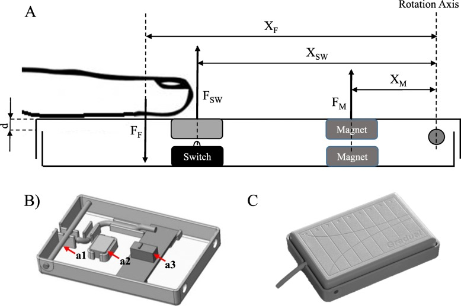
Interfaz cerebro-computadora basado en señales LFP
Recientemente se demostró que personas que padecen de parálisis pueden usar interfaces cerebro-computadora que se basan en la actividad de picos infracorticales con el objetivo de lograr ecribir mensajes eficientemente. Aunque dichos tipos de dispositivos por lo general necesitan ser calibrado frecuentemente por ingenieros capacitados para mantener el rendimiento óptimo de este dispositivo, esto se debe a la inestabilidad de la señal neuronal. Para eliminar este problema, el enfoque del dispositivo en la imagen utiliza potenciales de campo local (LFP), señales que pueden ser más estables que los potenciales de acción neuronales, para decodificar los comandos de los participantes. [ 2 ]
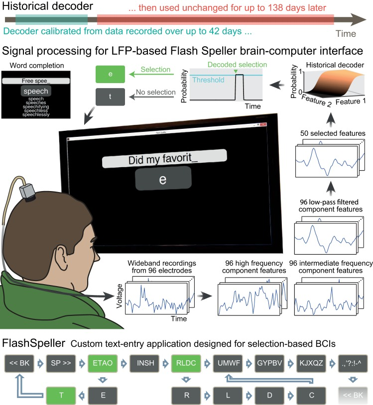
Gafas Morse: un sistema de comunicación IoT basado en código Morse para usuarios con problemas de habla
Las gafas Morse o también denominadas “Morse Glasses” es un dispositivo (ocular) portátil basado en la tecnología IoT y un código Morse modificado que captura los parpadeos de los ojos del paciente y los traduce mediante el uso de un código Morse estándar universal en un conjunto de alfabetos u oraciones. Tales alfabetos u oraciones son mostrados en una app móvil instalada en cualquier dispositivo compatible con Android. Además, el sonido de las frases puede ser escuchado a través de la app con la finalidad de que los familiares o amigos del paciente puedan comunicarse con el paciente de manera eficiente sin necesidad de dispositivos adicionales. [ 3 ]
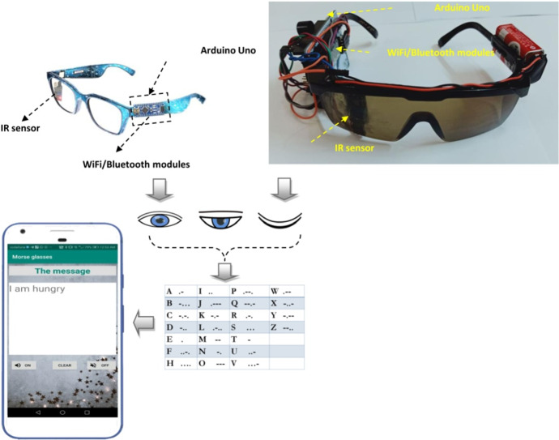
TeleBCI: capacitación, monitoreo y comunicación de usuarios remotos con una interfaz cerebro-computadora de potencial evocado
El sistema teleBCI incluye una computadora portátil basada en Windows 10 con cámara web y micrófono integrados, un segundo monitor orientado al paciente en el que estaba montada una barra de seguimiento ocular Tobii eyeX (Tobii, Suecia) y una gorra Nautilus de 8 canales (Guger Technologies, Austria), con electrodos activos gelificados g.Scarabeo para registro de electroencefalograma (EEG).Por otro lado, el software de videoconferencia Adobe Connect (Adobe, EE. UU.) permite la transmisión bidireccional de audio y video, el uso compartido de la pantalla y el control remoto por computadora por parte del equipo de investigación o cuidadores. [ 4 ]
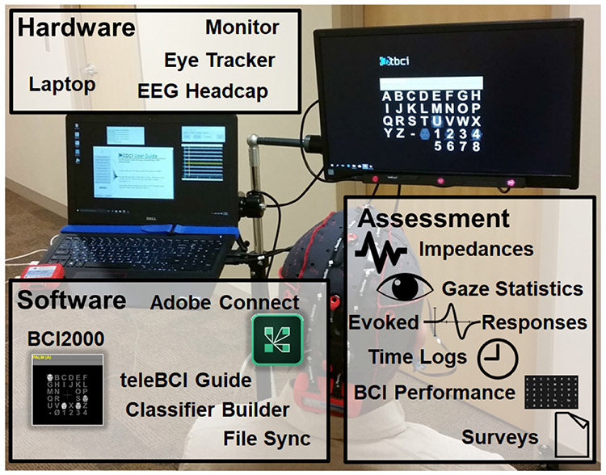
LeMMS
Se aplicó el LeMMS en un grupo de 20 personas que padecen ELA en estadío avanzado de dicha enfermedad.Cabe resaltar que todos los participantes ya habían usado dispositivos de ayuda de comunicación que empleaban otros sensores, sin embargo, no podían operar esos sensores a diferencia de LeMMS que si podían emplear.
Todos los pacientes fueron evaluados al inicio del estudio y luego al mes, seis meses y 12 meses. En el inicio del estudio se incluyeron las siguientes pruebas [ 1 ] :
➤ La administración de escalas clínicas estandarizadas
➤ Click-Test-30 que contaba el número máximo de activaciones del LeMMS durante 30 segundos
➤La evaluación de la fuerza del pulgar y/o dedos con la escala de Kendall
En el segundo cuestionario realizado al mes de uso de LeMMS, se logró recopilar información relacionada al uso y el Click-Test-30 aplicado en el primer, sexto y doceavo mes de uso.
Resultados
Al finalizar el entrenamiento, todos los usuarios pudieron emplear el LeMMS con tan solo el movimiento de un solo dedo. Durante el primer mes de uso,los participantes usaron LeMMS 5,45 horas por cada día de dicho mes.Respecto al Click-Test-30 no hubo un cambio significado entre los resultados del primer y sexto mes, no obstante el rendimiento fue disminuyendo paulatinamente. Por último, a los doce meses de uso 9 de los 20 participantes aún podían usar su ayuda de comunicación. [ 1 ]
Interfaz cerebro-computadora basado en señales LFP
Se evaluaron a dos individuos, el primero con síndrome de enclaustramiento debido a un accidente cerebrovascular del tronco encefálico y el segundo con tetraplejía secundaria a esclerosis lateral amiotrófica (ELA) utilizaron interfaces cerebro-computadora (BCI) de comunicación simple basado en potenciales de campo local intracorticales (LFP) durante 76 y 138 días, respectivamente, sin recalibración y sin pérdida significativa de rendimiento. Tasas de ortografía BCI de 3.07 y 6. 88 caracteres correctos / minuto permitieron a los participantes escribir mensajes y escribir correos electrónicos. Los resultados indicaron que las personas con síndrome de enclaustramiento pronto podrían usar un BCI basado en LFP lento pero confiable para la comunicación diaria sin la intervención continua de un técnico o cuidador. [ 2 ]
Resultados
Los resultados indican que las personas con síndrome de enclaustramiento pronto podrían usar un BCI basado en potenciales de campo local lento pero confiable para la comunicación diaria sin la intervención continua de un técnico o cuidador.Y este estudio demuestra que gracias a los potenciales de campo local se pueden obtener señales más estables que los potenciales de acción neuronales , por lo tanto, no sería necesario calibrar el dispositivo frecuentemente. [ 2 ]
Anim pariatur cliche reprehenderit, enim eiusmod high life accusamus terry richardson ad squid. 3 wolf moon officia aute, non cupidatat skateboard dolor brunch. Food truck quinoa nesciunt laborum eiusmod. Brunch 3 wolf moon tempor, sunt aliqua put a bird on it squid single-origin coffee nulla assumenda shoreditch et. Nihil anim keffiyeh helvetica, craft beer labore wes anderson cred nesciunt sapiente ea proident. Ad vegan excepteur butcher vice lomo. Leggings occaecat craft beer farm-to-table, raw denim aesthetic synth nesciunt you probably haven't heard of them accusamus labore sustainable VHS.
2. Contexto comercial
Perú
En la actualidad, la ELA es tratada mayormente por fármacos, como: riluzol. Para el desplazamiento y rehabilitación de los pacientes se utiliza en todos los casos, una silla de ruedas eléctrica especializada para pacientes con esclerosis amiotrófica lateral, el cual tiene un costo alrededor de los 2,100 soles aproximadamente. [ 5 ]
Cuando el paciente presenta dificultades para comunicarse, se ha empezado a usar terapias del habla por medio de abecedarios o tablets para que le sea más sencillo transmitir lo que sienten por medio de imágenes y/o frases. Estas tablets suelen estar conectadas a la silla de ruedas del paciente o a la cama de hospital para que el dispositivo sea portátil. [ 6 ]
Adicionalmente, según la directora de la asociación ELA Perú, nos menciona que a los pacientes de ELA se les ha conseguido diferentes implementos que sirven de ayuda en su vida diaria, como el uso de cubiertos con un mago ancho, la implementación de grúas en las camas de los pacientes, entre otros. [ 7 ]
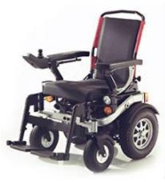
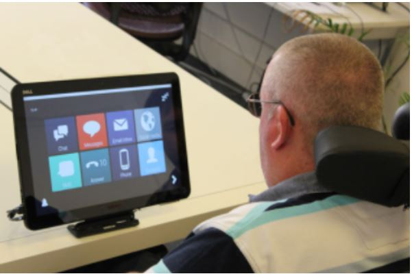
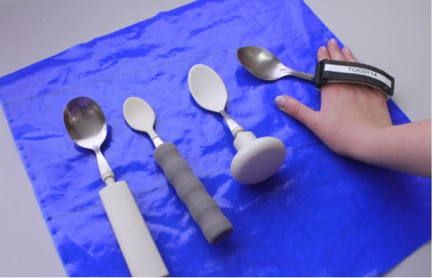
KR101590396B1 -APPARATUS FOR COMMUNICATION
La presente invención proporciona un pseudopanel de visualización con consonantes o vocales formadas en el lado superior; y un controlador para controlar la rotación y retroceso del pseudopanel de visualización. El dispositivo de comunicación se caracteriza técnicamente porque cuando la rotación del pseudopanel de visualización se detiene aplicando una fuerza externa física al pseudopanel de visualización giratorio, cuando el pseudopanel de visualización se detiene físicamente, el dispositivo de comunicación gira en la dirección opuesta al sentido de giro antes de la aplicación.
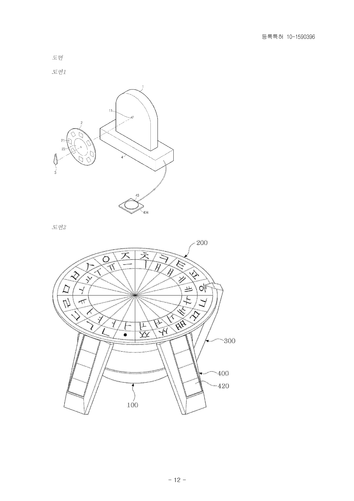
Ventajas
✔ Es posible visualizar todas las consonantes y/o vocales para formar oraciones
✔ Es sencillo de usar
Desventajas
✘ No es transportable
✘ Se necesita mucha fuerza para girar el dispositivo, teniendo en cuenta que es para personas diagnosticadas con ELA
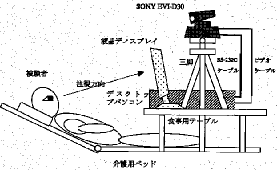
JP2003187232 -COMMUNICATION SYSTEM USING BLINK
En un sistema de comunicación que utiliza los parpadeos, la carga a imponer al usuario es pequeña ya que es un tipo completo sin contacto que utiliza una cámara CCD para permitir la detección automática y el seguimiento automático de ambos ojos, ya que las posiciones de los ojos del usuario se reconocen y ajustan automáticamente en el lado del sistema simplemente encendiendo y dirigiendo la cámara CCD a la cara del usuario por parte del cuidador y la enfermera.
Ventajas
✔ Es capaz de utilizar al parpadeo como una fuente de comunicación
✔ Al tener una cámara CCD permite una detección automática
Desventajas
✘ No es transportable
✘ El dispositivo al tener varios accesorios (cámara CCD, un computador) hace que sea muy pesado
CN111583914A -Método de clasificación de voz de Big Data basado en la plataforma Hadoop
La invención se refiere a un método de clasificación de voz de big data basado en una plataforma Hadoop. El problema que resuelve es que, la gran cantidad de datos es sin duda una gran ventaja de la tecnología de análisis de big data en red, pero cómo garantizar la calidad de los datos masivos y cómo lograr la limpieza, la gestión y el análisis de datos masivos también se ha convertido en una de las principales prioridades técnicas.
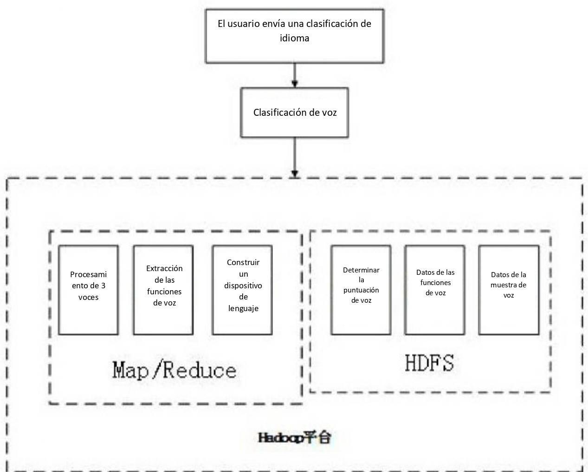
Ventajas
✔ Se puede clasificar y almacenar la voz mediante una plataforma "Hadoop"
✔ Se puede analizar si un paciente padece de disartria, enfocado en paciente con ELA
Desventajas
✘ El dispositivo solo comprende el lenguaje chino
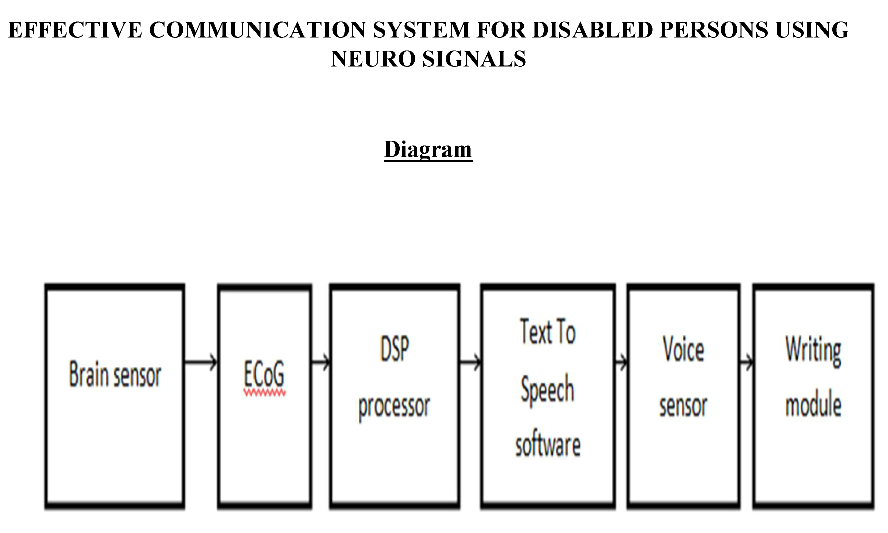
AU2020102681A4 -EFFECTIVE COMMUNICATION SYSTEM FOR DISABLED PERSONS USING NEURO SIGNALS
Se abordará la necesidad de un sistema de comunicación para identificar sus sentimientos para realizar sus tareas del día a día. Esto se puede lograr al tener un sistema de comunicación eficaz con una conversación de texto simple mediante el uso de señales neuronales. Los sentimientos y pensamientos simples que corren en el cerebro pueden manifestarse con la ayuda de una máquina de escritura automática que usa sensores cerebrales y señales neuronales para algoritmos de conversión de texto y voz.
Ventajas
✔ Utiliza las señales neuronales para formar un sistema de comunicación
✔ Puede captar pensamientos y sentimientos por medio de una máquina de escritura
Desventajas
✘ No es muy accesible, su costo es muy elevado
CN103997553 -PUSH-TO-TALK DEVICE
Dispositivo parecido a un radio que permite comunicarse en forma grupal a diferentes dispositivos (celulares, radios, etc.) vía bluetooth. Este comprende de un botón que al presionar puedes hablar a través de una llamada telefónica. El micrófono y el altavoz se conectan al dispositivo.

Ventajas
✔ Fácil de usar
✔ Barato de fabricar
✔ Facilita la comunicación
Desventajas
✘ No es tan utilizado en el ámbito de pacientes con ELA
✘ Fácilmente reemplazable con otros dispositivos
WO2012121573 -AUGMENTATIVE AND ALTERNATIVE COMMUNICATION DEVICE FOR DISABLED PERSON
La presente invención se refiere a un dispositivo de comunicación aumentativa y alternativa para una persona discapacitada, en el que la persona mientras tenga la capacidad de ver y percibir imágenes en cierta medida es capaz de expresar intenciones personales. Este funciona a través de un botón conectado al dispositivo en donde muestra imágenes ya diseñadas que el paciente quiere transmitir.
Ventajas
✔ Accesible
✔ Fácil de usar
✔ Útil
Desventajas
✘ No es tan portátil
✘ Imágenes limitadas
US2006105301A1 -ASSISTIVE COMMUNICATION DEVICE
Este dispositivo permite seleccionar elementos de una pantalla, con los cuales se puede componer un mensaje que se traduce en una salida por voz. Cada vez que se selecciona un elemento, se explica cuál es la consecuencia de elegir dicho elemento. Además, las opciones más utilizadas por el usuario se irán resaltando de acuerdo a su uso. El dispositivo estará conectado a una línea telefónica, un correo electrónico o a algún sistema de alarma en posesión de su cuidador.
Ventajas
✔ Facilita la comunicación cuidador-paciente
✔ Es de fácil manejo
✔ Pantalla pequeña
✔ Permite a un mismo cuidador monitorear a varios usuarios
Desventajas
✘ Emplea una pantalla táctil, lo que eleva su costo
✘ Requiere de la movilidad del brazo para poder elegir una palabra
US8251924B2 -NEURAL TRANSLATOR
Es un aparato que permite procesar un conjunto de señales comunicadas asociadas con un conjunto de músculos que intervienen en el habla. El sistema consta de un solo sensor integrado para detectar una señal eléctrica a través del mismo. Para luego tomar las características de la señal eléctrica detectada, filtrada y amplificada, y transformarlas continuamente en sonidos del habla sin necesidad de modulación adicional.
Ventajas
✔ No requiere esfuerzo de alguna extremidad
Desventajas
✘ Implica hacer un esfuerzo para al menos mover los músculos de la garganta
TW201805856A -EYE GESTURE TRACKING
Es un conjunto de métodos sistemáticos y programas computacionales que obtienen, a través de un fotodetector, una señal eléctrica que representa la medida de una señal óptica reflejada en un ojo. Esta señal es comparada con una señal de referencia y posteriormente procesada. De esta forma, se puede transmitir información a través de la mirada.
Ventajas
✔ No requiere el uso de músculos en las extremidades o en el habla
Desventajas
✘ Es costoso debido a la alta tecnología que manejan
✘ No es muy precisa, ya que hay varios factores que pueden interrumpir o perturbar la obtención de la señal
3. Lista de requerimientos


{kind=link}
{kind=link}
{kind=link}
{kind=link}
{kind=link}
{kind=link}
{kind=link}
{kind=link}
{kind=link}
{kind=link}
{kind=link}
{kind=link}
{kind=link}
Anim pariatur cliche reprehenderit, enim eiusmod high life accusamus terry richardson ad squid. 3 wolf moon officia aute, non cupidatat skateboard dolor brunch. Food truck quinoa nesciunt laborum eiusmod. Brunch 3 wolf moon tempor, sunt aliqua put a bird on it squid single-origin coffee nulla assumenda shoreditch et. Nihil anim keffiyeh helvetica, craft beer labore wes anderson cred nesciunt sapiente ea proident. Ad vegan excepteur butcher vice lomo. Leggings occaecat craft beer farm-to-table, raw denim aesthetic synth nesciunt you probably haven't heard of them accusamus labore sustainable VHS.
Anim pariatur cliche reprehenderit, enim eiusmod high life accusamus terry richardson ad squid. 3 wolf moon officia aute, non cupidatat skateboard dolor brunch. Food truck quinoa nesciunt laborum eiusmod. Brunch 3 wolf moon tempor, sunt aliqua put a bird on it squid single-origin coffee nulla assumenda shoreditch et. Nihil anim keffiyeh helvetica, craft beer labore wes anderson cred nesciunt sapiente ea proident. Ad vegan excepteur butcher vice lomo. Leggings occaecat craft beer farm-to-table, raw denim aesthetic synth nesciunt you probably haven't heard of them accusamus labore sustainable VHS.
Anim pariatur cliche reprehenderit, enim eiusmod high life accusamus terry richardson ad squid. 3 wolf moon officia aute, non cupidatat skateboard dolor brunch. Food truck quinoa nesciunt laborum eiusmod. Brunch 3 wolf moon tempor, sunt aliqua put a bird on it squid single-origin coffee nulla assumenda shoreditch et. Nihil anim keffiyeh helvetica, craft beer labore wes anderson cred nesciunt sapiente ea proident. Ad vegan excepteur butcher vice lomo. Leggings occaecat craft beer farm-to-table, raw denim aesthetic synth nesciunt you probably haven't heard of them accusamus labore sustainable VHS.
-
1.
Caligari M, Godi M, Giardini M, Colombo R. Development of a new high sensitivity mechanical switch for augmentative and alternative communication access in people with amyotrophic lateral sclerosis. Journal of NeuroEngineering and Rehabilitation [Internet]. 2019 [cited 14 September 2021];16(1). Available from: https://pubmed.ncbi.nlm.nih.gov/31783763/
-
2.
Milekovic T, Sarma A, Bacher D, Simeral J, Saab J, Pandarinath C et al. Stable long-term BCI-enabled communication in ALS and locked-in syndrome using LFP signals. Journal of Neurophysiology [Internet]. 2018 [cited 15 September 2021];120(1):343-360. Available from: https://pubmed.ncbi.nlm.nih.gov/29694279/
-
3.
Tarek N, Mandour M, El-Madah N, Ali R, Yahia S, Mohamed B et al. Morse glasses: an IoT communication system based on Morse code for users with speech impairments. Computing [Internet]. 2021 [cited 17 September 2021];. Available from: https://www.ncbi.nlm.nih.gov/pmc/articles/PMC8202051/?report=classic
-
4.
Geronimo A, Simmons Z. TeleBCI: remote user training, monitoring, and communication with an evoked-potential brain-computer interface. Brain-Computer Interfaces [Internet]. 2020 [cited 15 September 2021];7(3-4):57-69. Available from: https://www.ncbi.nlm.nih.gov/pmc/articles/PMC7986960/
-
5.
Rabiza H, Ministerio I, Salud D, De S. [cited 2021 Sep 18]. Available from: https://www.minsa.gob.pe/erh/documentos/RM198_2014_MINSA.pdf
-
6.
Rehabilitación y Ayudas Técnicas | FUNDELA [Internet]. Fundela.es. 2013 [cited 2021 Sep 18]. Available from: https://www.fundela.es/ela/tratamiento-de-rehabilitacion/
-
7.
Alianza Internacional de Asociaciones de ELA – ELA PERÚ [Internet]. Elaperu.org. 2019 [cited 2021 Sep 18]. Available from: https://elaperu.org/alianza-internacional-de-asociaciones-de-ela/

Investigación

Rehabilitación

Ingeniería de tejidos

Diseño 3D

Biomecánica

Ingeniería Clínica